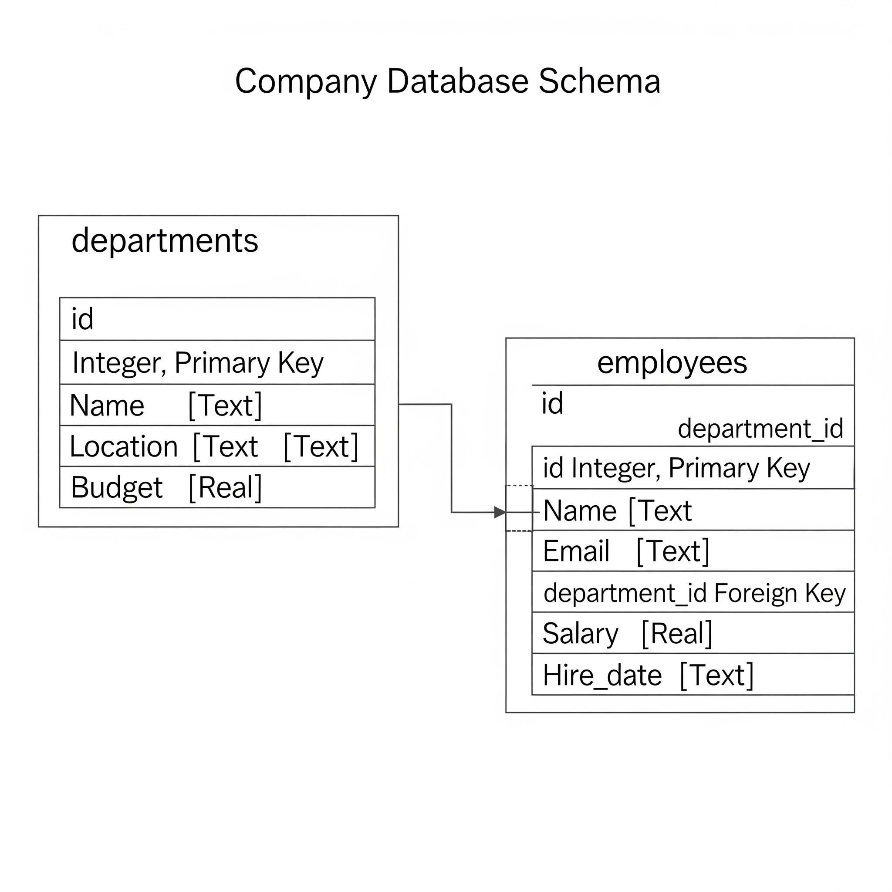
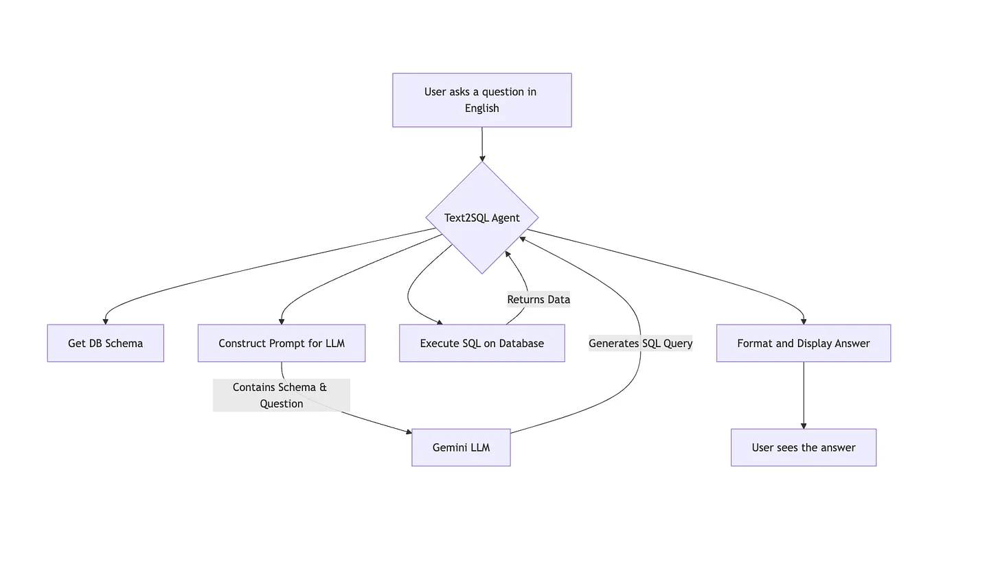

Let me be honest… I don’t like writing SQL queries. And I always wished if someone could do it for me. Well that’s exactly what we are going to do today!
We are going to build an intelligent agent that does just that, using Google’s Gemini model and creating a neat web interface with Gradio.
Traditional Text-to-SQL pipelines can sometimes be a bit like a black box. You give them a question, they spit out a SQL query, and you hope for the best.
What’s the advantage of building something more “agent-like,” even in a simplified form?
A standard text-to-sql pipeline can be brittle. The generated SQL query might be incorrect. Even worse, an incorrect query could run without errors but give you wrong or useless results, and you might not even realize it!
👉 While a full-fledged agent system might involve complex reasoning and self-correction, our approach today focuses on building a robust pipeline with clear steps, good error handling when talking to the Large Language Model (LLM), and a way to learn from the process. This lays the foundation for more advanced agentic behavior later.
Let’s build this agent! 💪
And by the way, all the code related to this guide can be found here on my github.
The Big Picture: Our Agent’s Workflow
Before we dive into code, let’s look at the overall flow of our system. It’s a simple, logical sequence: a user’s question comes in one end, and an answer from the database comes out the other.

Setting the Stage - Our Database
First things first, every SQL agent needs a database to talk to! For this tutorial, we’ll use SQLite, which is super convenient because it’s a file-based database and doesn’t require a separate server.
Our Data: We’ll imagine a simple company database with two main tables:
departments: Stores information about different departments.
employees: Stores information about employees and which department they belong to.
Here’s the structure (schema) we’ll aim for:

This setup allows us to ask interesting questions like “Which employees work in Engineering?” or “What’s the average salary in the HR department?”.
To bring this to life, we need a script to create and populate this database. This ensures our agent always has a consistent environment to work in.
For those who want to see exactly how the database is created, you can check out the database_setup.py file in the GitHub repo. It’s a straightforward Python script using the sqlite3 library.
This script, when called by our UI application, will ensure we always have a fresh database with this structure and data for our agent to work with.
Architecting Our Agent
Now let’s make our agent! Since the goal of our repository is to build several different kinds of agents from scratch, we need a clean, reusable structure.
Why a Base Class? We use a base class to define a common “contract” or interface. This ensures all our agents, whether for Text-to-SQL or another task, have a consistent design. It’s like saying every vehicle must have a run method, even if a car and a motorcycle implement it differently. This makes our project scalable and easy to understand.
We’ll define a simple Agent base class in agents/base_agent.py that requires every agent to have a run method.
# agents/base_agent.py
from abc import ABC, abstractmethod
class Agent(ABC):
def __init__(self, name: str):
self._internal_name = name
@abstractmethod
def run(self, user_input: str, history: list[tuple[str, str]] = None) -> str:
pass
@property
def name(self) -> str:
return self._internal_nameOur Text2SQLAgent will inherit from this, guaranteeing it fits into our agent framework.
The Core Logic of our Text2SQL Agent
Our agent’s job can be broken down into a few key steps. Let’s look at the concepts behind the main methods.
Getting the Database Schema For an LLM to generate correct SQL, it must know the structure of your database. We need a method, let’s call it _get_database_schema, that connects to our SQLite file and programmatically extracts all table names, column names, and their data types. This schema is then passed to the LLM as part of the context.
Generating the SQL Query This is the heart of the agent, where we talk to Gemini. The process is called prompt engineering. We need to write a very clear set of instructions (a “prompt”) for the model.
Our prompt includes:
The Role: “You are an expert SQLite SQL query generator.”
The Context: The full database schema we just extracted.
The Task: The user’s question.
The Constraints: “Output ONLY the SQL query. No extra text or markdown.”
We then wrap this prompt and send it to the Gemini API using Google’s Python SDK.
# A conceptual look at the prompt structure inside the _generate_sql_with_gemini method
system_instruction_text = "You are an expert SQLite SQL query generator."
prompt_for_task = f"""
Database Schema:
---
{self.schema}
---
Task: ...
Constraints: ...
User Question: {question}
SQL Query:
"""
full_prompt_for_gemini = f"{system_instruction_text}\n\n{prompt_for_task}"
response = self.gemini_model.generate_content(full_prompt_for_gemini, ...)Full code can be found here.
- Executing the Query Once Gemini returns what we hope is a valid SQL query, our agent needs to run it. A method _execute_sql_query connects to the database, executes the string, and fetches the results.
A quick note on security: In a real-world application, directly running LLM-generated SQL can be risky. For this educational project, we’re keeping it simple, but in production, you would add validation layers or use read-only database permissions.
Our Adventure with Gemini: From Bugs to Best Practices
Working with powerful LLMs is an iterative process. It’s rarely perfect on the first try! Here are some real challenges we faced and the key lessons learned.
Best Practices We Adopted:
Clear, Instructive Prompts: Be explicit about the role, context, task, and constraints.
Configuration for Determinism: Using temperature=0.0 for SQL generation tells the model to be predictable and factual, not creative.
Handling API Responses Carefully: Never assume the LLM’s response will be perfect. Always check for errors, finish_reason, and empty content before processing the output.
Bugs Along the Way (and How We Squashed Them!):
The “Empty Schema” Mystery: At first, our agent wasn’t sending the schema! Gemini received an empty prompt and couldn’t work. By meticulously printing the exact prompt string before sending it, we found the bug in our schema-loading logic and fixed it.
The MAX_TOKENS Puzzle: Even with the schema, our first model (a preview version) would often fail with finish_reason: MAX_TOKENS and no output. It seemed to be getting confused by the long, complex prompt.
The “Aha!” Moment: We used the “Extreme Prompt Simplification Test” we replaced our complex prompt with a simple question like “What is the capital of France?”. When that worked, it proved our API setup was fine and the issue was with how that specific model handled our complex prompt.
The Fix: Increasing max_output_tokens resolved this!
- The response.text Trap: Using response.text to get the output can fail if the model’s response is blocked or empty. We learned to robustly parse response.candidates[0].content.parts instead.
Key Takeaway: Debugging LLM interactions is an art. Log your inputs (prompts) and its outputs (raw responses) very carefully!
Bringing Our Agent to Life with Gradio
Now, let’s build a cool UI! We want a chat window with clickable question suggestions on the side. For this custom layout, we’ll use Gradio’s gr.Blocks().
(Here you could insert a screenshot of the final Gradio UI)
The UI has three main parts:
The Chatbot Display: A gr.Chatbot component shows the history of the conversation.
The Suggestion Column: We create a gr.Column and loop through a list of example questions, creating a gr.Button for each. The magic happens in the .click() event handler for each button, which updates the main input box.
The Input Area: A gr.Textbox for typing messages and a “Send” gr.Button. Both are wired to a single function, handle_chat_submission, which orchestrates the interaction with our agent.
This function takes the user’s message and the chat history, passes them to our agent’s .run() method, gets the result, and updates the chat display.
For the specific code that wires up these Gradio components, feel free to check out ui/app_text2sql.py in the repository.
How Good is Our Agent? A Note on Evaluation
Creating an agent is just the first step. To know if it’s truly useful, especially for production, we need to evaluate it.
Key Evaluation Metrics for Text-to-SQL:
Execution Accuracy: This is the most important one. Does the generated SQL run without errors and produce the correct answer? You’d need a test dataset of questions and their known correct answers to verify this.
Query Match: Does the generated SQL query exactly match a “golden” or reference SQL query? This is very strict and often not necessary, as multiple different SQL queries can produce the same correct result.
Robustness: How well does the agent handle ambiguous questions, questions about things not in the schema, or slightly malformed inputs?
For a real project, you would build a “test suite” of many question-query-answer triplets and run your agent against it to calculate these metrics automatically. This helps track improvements as you refine your prompts or change models.
Conclusion
And there you have it! We’ve journeyed from understanding the need for a robust Text-to-SQL solution, setting up our database, architecting a scalable agent structure, and diving deep into the logic using Gemini. We navigated some tricky debugging and wrapped it all in a user-friendly Gradio interface.
You’ve now built a functional Text-to-SQL agent from scratch! This project covers many important concepts: OOP, database interaction, LLM prompting, debugging, and web UI creation.
This project touches on many important concepts:
- Object-Oriented Programming (base classes, inheritance)
- Database Interaction (SQLite)
- LLM Prompt Engineering and API Usage (Gemini)
- Debugging and Iterative Development
- Web UI Creation (Gradio)
Feel free to experiment further:
- Make the agent use conversation history for follow-up questions.
- Add more error handling or self-correction attempts if the SQL fails.
- Try different LLMs or prompting strategies.
- Expand the Gradio UI with more features!
Happy coding, and keep building amazing things!